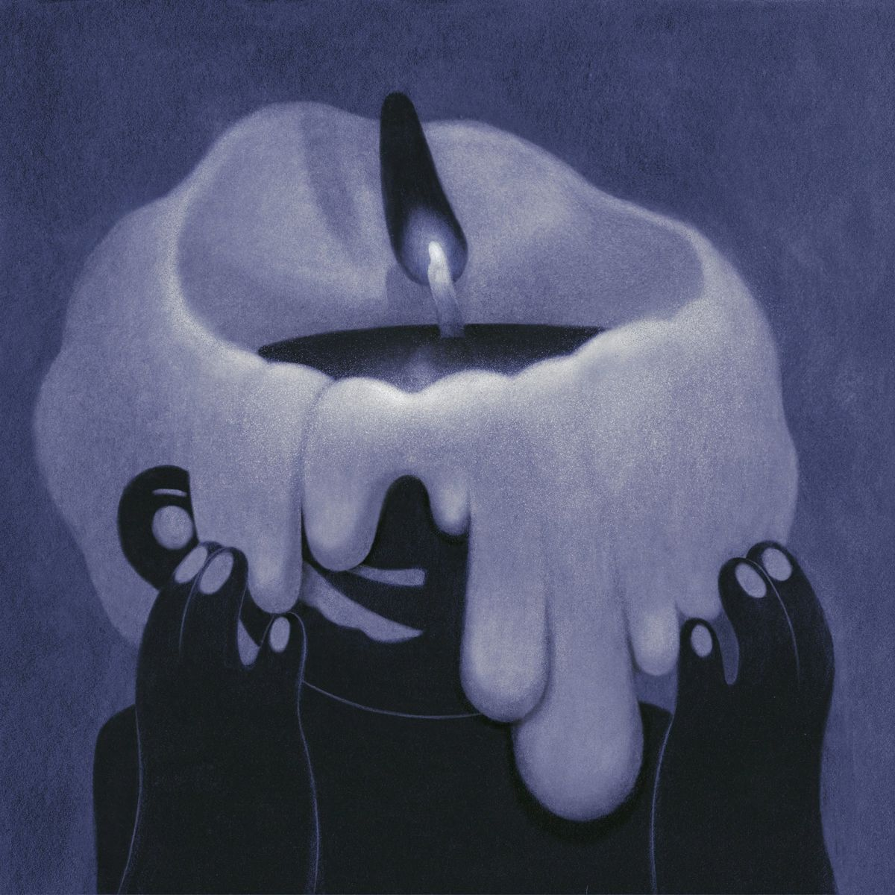

What is Insomnia?
Insomnia is more than just “not being able to fall asleep.” Medically, it is defined as difficulty falling asleep, staying asleep, or waking up too early, with consequences for daily life. For me, insomnia feels like a long-term companion. The first time I realized I might be struggling with it was in middle school—lying awake in bed, exhausted but unable to sleep. Time stretched endlessly in the dark, and I began to dread the arrival of night.
Definition
Medscape defines insomnia as “a repeated difficulty with sleep initiation, duration, consolidation, or quality that occurs despite adequate time and opportunity for sleep.”
Diagnostic Criteria
DSM-5-TR specifies insomnia as sleep problems occurring at least three nights per week, lasting for at least three months, and causing daytime impairment.
Prevalence
About 10–12% of adults are estimated to suffer from chronic insomnia disorder; the proportion experiencing acute (short-term) insomnia is even higher.
Who Is More Likely to Experience It?
Studies show that women, older adults, those with mental health conditions, and people under high stress or in poor living environments are more likely to develop insomnia.
Consequences
Daytime Consequences
Fatigue, lack of concentration, irritability, reduced memory; long-term insomnia is associated with cardiovascular disease, hypertension, diabetes, and depression.
Long-term Health Risks
Cost and Societal Burden
Long-term insomnia is associated with cardiovascular disease, hypertension, diabetes, and depression.
